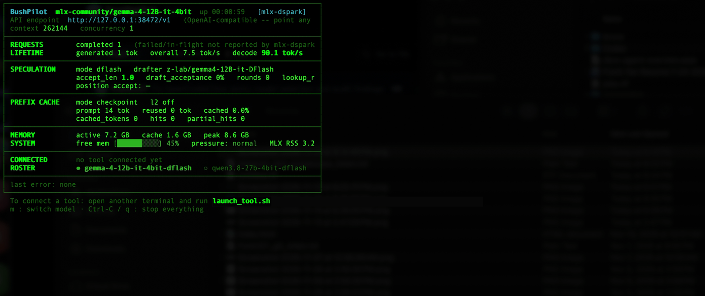

Installation, compatible coding tools, curated models, configuration, and troubleshooting.
brew install frank321/bushpilot/bushpilot
This installs three commands: bushpilot-server (start the model server + dashboard),
bushpilot (attach a coding tool, auto-splitting a pane if the server isn't running yet), and
bushpilot-uninstall. Upgrade anytime with brew update && brew upgrade bushpilot.
Download bushpilot.zip
(or clone the repository) and run ./launch_tool.sh
and ./start_mlx_server.sh from inside the folder.
bushpilot # or ./launch_tool.sh
If the server isn't running yet, Bushpilot offers to split a terminal pane/window (iTerm2, tmux, or Terminal.app)
for the server dashboard, waits for your chosen model to become healthy, and launches your coding tool in the original pane.
bushpilot-server # or ./start_mlx_server.sh
Detects your chip and currently-free memory, filters models that fit safely, downloads the chosen model if needed,
and displays the live dashboard. Press Tab in the fzf picker to pre-register
multiple models, or press m on the dashboard anytime to hot-swap models live.

bushpilot # or ./launch_tool.sh
Pick Claude Code, OpenCode, Aider, Cline, or Pi. Open more terminals and run bushpilot again
to attach additional tools or sessions to the same shared server.
Press q or Ctrl-C in the server terminal to stop gracefully.
M1, M2, M3, or M4 (or later). MLX requires Apple Silicon for GPU acceleration.
The picker only offers models that fit your currently-free memory — more RAM unlocks larger models (under 1B to ~27B).
Homebrew (brew.sh) and Python 3.10+. fzf is optional for nicer pickers (brew install fzf).
Claude Code, OpenCode, Aider, Cline, or Pi installed. Internet is only needed on first run to download weights.
Bushpilot implements OpenAI's chat completion API and Anthropic's /v1/messages format natively.
launch_tool.sh has built-in launchers for Claude Code, OpenCode,
Aider, Cline, and Pi.
Any other OpenAI-compatible IDE extension, CLI tool, or custom script (Cursor, Windsurf, VS Code extensions, llm, litellm, OpenAI SDK)
can also connect to the endpoint shown on the dashboard (default):
http://127.0.0.1:38472/v1
Use any non-empty string for the API key (e.g. local). Port 38472 was chosen to avoid colliding with 3000, 8000, 8080, or Ollama's 11434.
models.json)The curated catalog currently ships 58 selectable entries (31 verified as tested on real Apple Silicon), roughly smallest to largest:
Want a different HF MLX model? Run add_model.py to generate an entry in models.json.
Bushpilot serves MLX-format weights only (not GGUF).
~/.bushpilot/config.json)
Both server and launcher read ~/.bushpilot/config.json (overridden by MLX_PORT / MLX_HOST env vars):
{
"port": 9000,
"host": "127.0.0.1",
"preferred_model": "qwen3.5-9b-mlx-4bit",
"concurrency": 2,
"max_context_tokens": 65536,
"dspark_prefix_cache_slots": 4,
"dspark_prefix_cache_dir": "/path/to/ssd/spill"
}
preferred_model: skips the picker on launch as long as it still fits currently-free memory.concurrency: omit for auto mode, or force a fixed number of concurrent slots (trades per-slot context for guaranteed headroom).max_context_tokens: optional persistent upper bound on computed context (free-memory fit math still runs underneath).dspark_prefix_cache_*: optional prefix cache tuning for the mlx-dspark backend.
Weights range from under 1GB to ~15GB. Once downloaded, models are cached under ~/.bushpilot/models and reused on subsequent runs.
Check the reason printed on screen — it's either sustained low free memory (<10%) or macOS reporting critical memory pressure.
Pick a smaller model, close memory-heavy apps, or set preferred_model in config.json.
Check the exact API endpoint URL printed at the top of the server dashboard, verify your tool points to it, and ensure local connections to 127.0.0.1 aren't blocked.